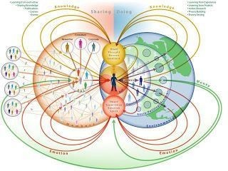

La aceleración del cambio tecnológico
El cambio tecnológico se ha acelerado a un ritmo sin precedentes en los últimos años. El auge de la inteligencia artificial, el aprendizaje automático y otras tecnologías avanzadas han provocado cambios significativos en la forma en que vivimos nuestras vidas. Estas tecnologías tienen el potencial de revolucionar las industrias y crear nuevas oportunidades de crecimiento e innovación.
